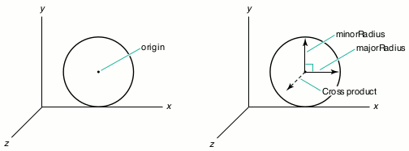

A number of new QuickDraw 3D geometric primitives can save you
time as you create 3D objects -- from footballs to the onion domes
of the Taj Mahal. Most of these new primitives are very versatile,
but this versatility comes at the cost of some complexity. Here
you'll find a discussion of their various features and uses, with
special attention to the differences among the features and
structural characteristics of the polyhedral primitives. Being
aware of these differences will help you make the right choices
when you're using these primitives in a particular application.
When QuickDraw 3D version 1.0 made its debut, it came with 12 geometric
primitives that you could use to model pretty much anything you wanted. With applied
cleverness, you could make arbitrary shapes by combining and manipulating such
primitives as polylines, polygons, parametric curves and surfaces, and polyhedra.
Because some shapes are so commonly used, recent versions of QuickDraw 3D have
added them as high-level primitives, including two new polyhedral primitives. This
frees each developer from having to reinvent them and ensures that the new
primitives are implemented in such a way as to fit nicely with the existing paradigm
in QuickDraw 3D.
We'll start by looking at how the new ellipse primitive was designed. A similar
paradigm was used in creating most of the other new high-level primitives.
Understanding their design will help you use them effectively. Later, we'll move on to
the two new polyhedral primitives -- the polyhedron and the trimesh -- which you
can use to model very complex objects. We'll also take a fresh look at the mesh and
trigrid, which have been around for a while, and compare the usefulness of all four
polyhedral primitives. Along the way, you'll find some relevant background
information about the QuickDraw 3D team's design philosophy.
I'm going to assume that you're already familiar with the capabilities of QuickDraw
3D, including how to use the original 12 geometric primitives. But if you want more
basic information, see the articles "QuickDraw 3D: A New Dimension for Macintosh
Graphics" in develop Issue 22 and "The Basics of QuickDraw 3D Geometries" in Issue
23. The book 3D Graphics Programming With QuickDraw 3D has complete
documentation for the QuickDraw 3D programming interfaces for version 1.0. Version
1.5 of QuickDraw 3D, which supports these new primitives, is now available.
To get you started using the new primitives, the code listings shown here accompany
this article on this issue's CD and develop's Web site.
Aficionados of QuickDraw 3D use a variety of terms to refer to a
geometric primitive. But a geometric primitive by any other name (primitive
geometric shape, basic geometric object, geometric primitive object, or
geometry) is still a geometric primitive.*
One category of geometric primitives is conics, quadrics, and quartics; this class
includes such shapes as ellipses, disks, ellipsoids (the generalization of spheres),
cones, cylinders, and tori (doughnuts). Each of these shapes is a recently introduced
primitive that's defined with a paradigm similar to the one already used in the box
primitive. I'll begin by explaining how the ellipse primitive works because the same
basic approach is used for the more complex geometries.
ELLIPSES
My article "NURB Curves: A Guide for the Uninitiated" in develop Issue 25 describes
how you can make circles and partial circles with NURB curves. Though you can
further use NURB curves to make ellipses and elliptical arcs by manipulating the
locations of the control points, this isn't necessarily the most convenient way to do it.
So QuickDraw 3D now provides an ellipse primitive. The data structure for the ellipse
is as follows:
typedef struct TQ3EllipseData {
TQ3Point3D origin;
TQ3Vector3D majorRadius;
TQ3Vector3D minorRadius;
float uMin, uMax;
TQ3AttributeSet ellipseAttributeSet;
} TQ3EllipseData;
Let's assume we have a variable declared like this:
TQ3EllipseData ellipseData;
As we go over the ellipse primitive, I'll explain the various fields in the data
structure, then fill them in as I tell you how they work. Let's take for our example a
special case of an ellipse -- a circle of radius 2 that lies in the {x, y} plane, with an
origin at {3, 2, 0} -- and show how we'd define it in QuickDraw 3D. For starters, a
circle must have a center. One way QuickDraw 3D could do this is always center the
circle at the point {0, 0, 0} and then have us translate the circle to the desired
location. However, it seems a bit odd to be able to make, say, a line with arbitrary
endpoints, but not be able to make a circle with an arbitrary center. So, as shown in
Figure 1, a QuickDraw 3D circle follows the paradigm for primitives and has an
explicit center, called the origin in the data structure:
Q3Point3D_Set(&ellipseData.origin, 3, 2, 0);

Figure 1. Defining a circle's origin, size, and plane
Of course, circles must have a size. Again, QuickDraw 3D could make all circles a unit
size (that is, have a radius of 1) and then require us to scale them appropriately. But,
for the same reason that the circle has an explicit center, it has an explicit size.
Given an origin and size, we have to specify the plane in which the circle lies in 3D
space. Though it would be possible for QuickDraw 3D to define a circle's plane by
default -- say, the {x, z} plane -- and require us to rotate the circle into the desired
plane, QuickDraw 3D lets us define the radius with a vector whose length is the radius.
Then we similarly define a second radius perpendicular to the first radius. The cross
product of these two vectors (majorRadius and minorRadius) defines the plane the
ellipse lies in:
Q3Vector3D_Set(&ellipseData.majorRadius, 2, 0, 0); Q3Vector3D_Set(&ellipseData.minorRadius, 0, 2, 0);
In other words, the plane the circle lies in passes through the origin of the circle, and
the cross product of the majorRadius and minorRadius vectors is perpendicular to the
plane (see Figure 1).
For a full circle, we need to set uMin to 0 and uMax to 1 (more on this later):
ellipseData.uMin = 0; ellipseData.uMax = 1;
As for the final field in the data structure, ellipseAttributeSet, QuickDraw 3D includes
this field so that we can, for instance, make screaming yellow ellipses:
ellipseData.ellipseAttributeSet = Q3AttributeSet_New(); Q3ColorRGB_Set(&color, 1, 1, 0); Q3AttributeSet_Add(ellipseData.ellipseAttributeSet, kQ3AttributeTypeDiffuseColor, &color);
Finally, we create an ellipse object that describes the circle:
ellipse = Q3Ellipse_New(&ellipseData);
Or we can use the data structure in a Submit call in immediate mode (for rendering,
bounding, picking, or writing):
Q3Ellipse_Submit(&ellipseData, view);
The ellipse comes with the usual array of calls for getting and setting individual
definitional properties, as well as the entire definition, just like the other primitives.
Why all of this power just for a circle? This power gives us flexibility. Let's use some
of the object-editing calls to make some more interesting shapes. We'll start by
making an ellipse out of the circle we've just constructed. If you recall, we originally
made the circle with majorRadius and minorRadius equal to 2. So to make an ellipse
instead of a mere circle, all we have to do is make majorRadius and minorRadius
different lengths. To get the first ellipse you see in Figure 2, we can use this:
Q3Vector3D_Set(&vector, 0, 1, 0); Q3Ellipse_SetMinorRadius(ellipse, &vector);
"But wait," you say, "vectors have direction as well as size!" Well, we can get really
carried away and make the two defining vectors nonperpendicular to get something like
the second ellipse shown in Figure 2:
Q3Vector3D_Set(&vector, 1, 2, 0); Q3Ellipse_SetMinorRadius(ellipse, &vector);
Figure 2. Defining a regular and skewed ellipse
All we have left is how to define partial ellipses. We can do this by taking a parametric
approach. Let's say that an ellipse starts at u = 0 and goes to u = 1. Then we have to
define the starting point. Let's make it be the same point that's at the end of the vector
defining majorRadius in the first circle in Figure 3. To make a partial ellipse (that is,
an elliptical or circular arc), we specify the parametric values of the starting and
ending points for the arc:
Q3Ellipse_SetParameterLimits(ellipse, 0.05, 0.3);
Figure 3. Defining a partial ellipse
This gives us an elliptical (or in this case, circular) arc, as shown in Figure 3. (The
dotted line isn't actually rendered -- it's just there for diagrammatic reasons.)
Though the starting and ending points must be between 0 and 1, inclusive, we can make
the starting point have a greater value than the ending point:
Q3Ellipse_SetParameterLimits(ellipse, 0.875, 0.125);
As you can also see in Figure 3, this allows us to "wrap around" the point u = 0.
In version 1.5 of QuickDraw 3D, the feature for defining partials is not
enabled, so until it is, you must set the minimum and maximum parameter
limits to 0 and 1, respectively.*
About now, you're probably thinking that all this power and flexibility for just a
simple ellipse is overkill and that the preceding explanation is overkill, too. Sorry
about that, but there is a reason -- it turns out that we can take this same approach to
defining disks, ellipsoids, cones, cylinders, and tori.
DISKS
If you go back over the past few pages and substitute disk for ellipse, you pretty much
get everything you need to know. The data structure and functionality are analogous,
except that disks are filled primitives, like polygons, while ellipses are curvilinear
primitives, like polylines. So, partial disks are like pie slices rather than arcs. The
only other difference is that since disks are surfaces rather than curves, they have
parameters in two directions. Figure 4 illustrates the definition of a disk, including
the U and V parameters.
Figure 4. Defining a disk
Note that the UV surface parameterization for the disk is different from the
parametric limit values around the perimeter of the disk. The UV surface
parameterization was chosen so that an image applied as a texture would appear on the
disk or end cap as if it were applied as a decal. The values associated with positions
around the perimeter are used for making partial disks, just as we used them to make
partial ellipses. The distinct parametric limit values (uMin and uMax) are necessary
so that the partial end caps on partial cones and cylinders will properly match. If the
surface parameterization for the disk meant that the U direction went around the
perimeter, you'd have a nearly impossible time applying decal-like textures.
ELLIPSOIDS, CONES, CYLINDERS, AND TORI
Now, I want you to hold two thoughts in your head at the same time: recall that the box
primitive is defined by an origin and three vectors, which define the lengths and
orientations of the edges of the box, and then think about the definition of the ellipse.
Doing that, you should be able to imagine how we define, say, a sphere -- we just add
another vector to the definition of the ellipse!
Figure 5 shows how an ellipsoid (a sphere), cone, cylinder, and torus are defined with
respect to an origin and three vectors (the labels being fields in the corresponding data
structures). Note that the torus requires one more piece of information to allow for
elliptical cross sections: the ratio between the length of the orientation vector (which
gives the radius of the "tube" of the torus in the orientation direction) and the radius
of the tube of the torus in the majorRadius direction. With the resulting torus
primitive, you can make a circular torus with an elliptical cross section, or an
elliptical torus with a circular cross section, or an elliptical torus with an elliptical
cross section. (Hmm...perhaps I was drinking too much coffee when I designed the
torus.)
Figure 5. Creating four primitive objects and applying texture
You use the U and V parameters to map a texture onto a shape. In Figure 5, the U and V
parameters have their origins and orientations relative to the surface in what should
be the most intuitive layout. If you apply a texture to the object, the image appears as
most people would expect.
By changing the relative lengths of the majorRadius, minorRadius, and orientation
vectors, you can get ellipsoids, cones, cylinders, and tori with elliptical cross
sections, similar to how we made a circle into an ellipse earlier.
So to make an ellipsoid that's a sphere, you make the majorRadius, minorRadius, and
orientation vectors the same length as well as mutually perpendicular. To make an
elliptical cylinder, you can vary the lengths of the three vectors. Even more fun can be
had by making the vectors nonperpendicular -- this makes skewed or sheared objects.
This is easy to see with a cylinder (Figure 6).
Figure 6. Creating an elliptical or sheared cylinder
You can make partial disks, cones, cylinders, and tori in a fashion analogous to what we
did with the ellipse (see Figure 7). Since these are surfaces, you can set a minimum
and maximum for each direction.
Figure 7. A partial cylinder and cone
One important thing to notice is that the "wraparound" effect I showed with the ellipse,
by making uMin be greater than uMax, is possible with all the other primitives in this
category, but the equivalent feature in the V direction is possible only with the torus.
For example, the cone wraps around naturally in the U direction because the face itself
is one continuous surface in that direction, but the surface doesn't wrap in the V
direction.
Some of you must be wondering what we can do with the ends of cones and cylinders. Do
we want them left open so that the cones look like dunce caps and the cylinders look
like tubes? Or do we want them to be closed so that they appear as if they were true
solid objects? You may have already wondered about a similar issue when we used the
uMax and uMin parameter values to cut away part of the object. Do we make a sphere
look like a hollow ball, or like a solid ball that's been cut into?
To take care of these issues, the ellipsoid, cone, cylinder, and torus have an extra field
in their data structures that you can use to tell the system which of these end caps to
draw:
typedef enum TQ3EndCapMasks {
kQ3EndCapNone = 0,
kQ3EndCapMaskTop = 1 << 0,
kQ3EndCapMaskBottom = 1 << 1,
kQ3EndCapMaskInterior = 1 << 2
} TQ3EndCapMasks;
typedef unsigned long TQ3EndCap;
The end cap is a bit of a misnomer, as it refers to the end caps of the
cone and cylinder as well as to the "interior end caps" that are the analog to the
base and top caps of the cylinder for the portion at the boundary of the
cutaway.*
What about attributes? As for all other geometries in QuickDraw 3D, there is an
attribute set for the entire geometry, so you can make the entire cone, say, all one
color, or apply a texture to the entire object. But you're probably wondering about all
these end caps. For example, you might want to have different textures for a solid
cylinder's top end cap, face, and interior end caps, as shown in Figure 8. The data
structures for the ellipsoid, cone, cylinder, and torus have fields for storing these
types of attributes.
Figure 8. Cylinders with and without end caps or interior end caps
In version 1.5, QuickDraw 3D has four different types of shared-vertex primitives,
or polyhedral primitives -- the mesh and trigrid, and the newer polyhedron and
trimesh. These primitives vary in such characteristics as memory use, rendering
speed, and suitability for representing models. To a great extent, their usefulness is
governed by how closely each primitive's design follows the original QuickDraw 3D
design philosophy. (For some background, see the philosophical aside, "QuickDraw 3D
Design Principles.") Of the four polyhedral primitives, the polyhedron and the trigrid
best conform to the design standards set out by the QuickDraw 3D team. I'll begin by
describing the design characteristics of the polyhedron, followed by discussion of the
other three. Then I'll compare the four primitives and discuss their best uses.
______________________________
QUICKDRAW 3D DESIGN PRINCIPLES
The founders of the QuickDraw 3D team had as a primary design tenet that
retained mode and immediate mode would be coequal in the API in every
"renderable" component (geometric primitives, transforms, styles, and
attributes). Most other graphics systems support only one mode or, if both,
one is given short shrift in the API. The intention for QuickDraw 3D was to
allow developers to make decisions based on such things as their programming
style and preferences and their particular program needs.
This intention manifests itself in several ways. For example, in most cases the
calls that create an object take the address of a public data structure as an
argument, and this argument is exactly the same as that for the
immediate-mode Submit call:
TQ3GeometryObject polyhedron;
TQ3PolyhedronData polyhedronData;
... /* Fill in poly data structure here. */
/* Create a polyhedron object... */
polyhedron = Q3Polyhedron_New(&polyhedronData);
/* ...or use immed. mode with same struct. */
Q3Polyhedron_Submit(&polyhedronData, view);
Further, the Get and Set object-editing calls take arguments that correspond
to the part of the public data structure being retrieved or modified (or both).
Here, you see how to retrieve the sixth vertex from the polyhedron and add a
normal to it:
TQ3Vertex3D vertex;
TQ3Vector3D normal = { 0, 1, 0 };
Q3Polyhedron_GetVertex(poly, 5, &vertex);
Q3AttributeSet_Add(vertex.attributeSet,
kQ3AttributeTypeNormal, &normal);
Q3Object_Dispose(vertex.attributeSet);
It was also intended that the developer be able to mix immediate mode and
retained mode graphics freely and use these modes alternately or even
simultaneously for one geometric primitive (transform, and so forth). Thus,
you can easily use immediate mode for a triangle and then later make it a
retained object and place it in a group. If you have a retained object, you can
retrieve its data structure and use it in an immediate-mode call. The following
code retrieves the representation from a polyhedron object and then uses it to
make an immediate-mode rendering call:
TQ3PolyhedronData polyhedronData;
Q3Polyhedron_GetData(polyhedron, &polyhedronData);
Q3Polyhedron_Submit(&polyhedronData, view);
This capability is important if an application uses immediate mode but reads
in models from 3DMF files (which creates objects). The application can
retrieve the data structure from the object with a GetData call and then
dispose of the object with Q3Object_Dispose.
There's also a rich set of editing calls for retained objects. While this makes
the API rather large, it allows retained mode to have much of the flexibility of
immediate mode. In some display-list or object-oriented graphics systems
(or systems with both), such editing was often awkward to program and
inefficient. The design of QuickDraw 3D, however, makes these operations
easy, consistent, and convenient.
Another design principle that pervades QuickDraw 3D is that you define
properties by creating attribute set objects and locating them as close as
possible (in the data structures) to the item to which they apply. For
example, attribute sets for vertices are contained in a data structure along
with the location (coordinates):
typedef struct TQ3Vertex3D {
TQ3Point3D point;
TQ3AttributeSet attributeSet;
} TQ3Vertex3D;
The consistent use of attribute sets for vertices, faces, and entire geometric
primitives has two significant benefits. First, it allows for a reduction in
space when the same data is to be applied to a number of faces (or vertices or
geometries). For example, a shared texture needs to be stored only once, and
each face using it simply has a reference (a pointer) to it. Second, only a
single modification to an attribute set is needed to change the properties of all
faces (or vertices or geometries) that have a reference to that attribute set.
Not least, a notable design criterion was consistency in naming, ordering, and
structuring, because with an API so large it would be easy to get lost. For
example, all of the primitives that have explicit vertices (like polyhedra,
lines, triangles, polygons, and trigrids) use as the type of their vertices
TQ3Vertex3D (with the exception of the trimesh). Also, the editing calls for
all the objects are cut from the same cloth.
______________________________
POLYHEDRA
One common way of making a polyhedral primitive is to have an array of points, with a
list of faces (often triangles) to organize the points. Each face usually consists of a list
of indices into the list of vertices, so basically this is a polygon with one level of
array-based indirection. If there is more than one face, the vertices can be shared by
simply reusing the same array indices in each face. This allows the graphics system to
run faster because the same point doesn't have to be transformed or shaded more than
once, and it saves quite a lot of storage space. In addition, because two or more faces
share only one real vertex, this type of polyhedral primitive can make it easier to
program interactive editing.
The design philosophy for the geometry of type kQ3GeometryTypePolyhedron -- from
now on, let's call it the polyhedron -- was to implement this idea in a way that was
consistent with all the other QuickDraw 3D primitives. The basic entity for polygonal
primitives (line, triangle, polygon, and so forth) is TQ3Vertex3D, which is an {x, y,
z} location with an attribute set. For consistency with the rest of the geometric
primitives, the polyhedron also uses this data structure for its vertices.
The vertices of adjacent triangular faces are shared simply by using the same vertex
indices. Also, sets of attributes may be shared like other objects in QuickDraw 3D:
vertex->attributeSet =
Q3Shared_GetReference(otherVertex->attributeSet);
Vertices can contain the same locations, but may or may not share attributes. This can
be quite useful, for example, if you have a polyhedron you want to be generally
smooth-looking, but it has some edges or corners where you want a discontinuity. For
example, consider the cross section of a polyhedral object in Figure 9. Each location is
shared, and vertices at positions A, B, D, and E share normals, while the vertices at
position C share the location but not the normal. So when smooth-shaded, the object
has an edge or corner at position C but appears smooth elsewhere.
Figure 9. A cross section of a polyhedron with all vertices sharing locations but not
attributes
Another advantage to this approach is that values in an attribute set apply to all
vertices sharing that attribute set, so operations on it simultaneously affect all the
vertices to which it's attached. Of course, this applies to attributes on faces as well.
For example, though you can texture an entire object by attaching the texture to the
attribute set for the object, you can more naturally associate a single texture with a
group of faces by simply having each face contain a shared reference to the
texture-containing attribute set. But for a single texture to span a number of faces,
you need to make sure their shared vertices share texture coordinates. You can do this
by simply having shared vertices of faces that are spanned by a single texture use the
same attribute set, which contains texture coordinates (see Figure 10).
Figure 10. Applying textures that span a number of faces
Rendering the edges. Since the geometric primitives are generally array-based,
the polyhedron needs an array of faces -- and more information for a face. Besides an
attribute set for the face, the three vertices defining a face are in an array (of size 3).
The polyhedron also needs an enumerated type that tells us which edges are to be
drawn, and which not:
typedef enum TQ3PolyhedronEdgeMasks {
kQ3PolyhedronEdgeNone = 0,
kQ3PolyhedronEdge01 = 1 << 0,
kQ3PolyhedronEdge12 = 1 << 1,
kQ3PolyhedronEdge20 = 1 << 2,
kQ3PolyhedronEdgeAll = kQ3PolyhedronEdge01 |
kQ3PolyhedronEdge12 |
kQ3PolyhedronEdge20
} TQ3PolyhedronEdgeMasks;
typedef unsigned long TQ3PolyhedronEdge;
That way, by OR-ing these flags together, you can select which edges of a particular
triangle you want drawn. For example, if you're using a wireframe renderer to draw
an object like the one in Figure 11 (or you're using a scan-line or z-buffer type
renderer that implements the "edges" fill style), you wouldn't have to show the
"internal" edges, just the edges that represent the true border of the face. For face 0 in
Figure 11, you could tell the system that you only want to display the edges between
vertices 0 and 1, and between vertices 2 and 0, and not draw the edge between vertices
1 and 2. You'd do this by specifying (kQ3PolyhedronEdge01 | kQ3PolyhedronEdge20)
as the edge mask.
Figure 11. A wireframe and filled polyhedron
All this information is collected in this data structure:
typedef struct TQ3PolyhedronTriangleData {
unsigned long vertexIndices[3];
TQ3PolyhedronEdge edgeFlag;
TQ3AttributeSet triangleAttributeSet;
} TQ3PolyhedronTriangleData;
Of course, an alternative to using a mask to specify the edges would be to have a list of
edges for the entire polyhedron. This can be advantageous in that if the renderer draws
the edges (or lines, in the case of a wireframe renderer) from an edge list, the
renderer can transform the points just once each and draw each edge just once,
resulting in much faster rendering. So if you're willing and able to generate this
representation of edges, there's a way to do this. The renderer ignores the edge flags in
the face data structure if an array of these edges is present:
typedef struct TQ3PolyhedronEdgeData {
unsigned long vertexIndices[2];
unsigned long triangleIndices[2];
TQ3AttributeSet edgeAttributeSet;
} TQ3PolyhedronEdgeData;
As Figure 12 shows, the vertexIndices field specifies indices into the vertex array,
one for the vertex at each end of the edge. The triangleIndices field specifies indices
into the array of faces. You need to provide the indices to the faces that share this edge
because in order to perform proper backface removal, the edge is drawn only if at
least one of the faces that it's part of is facing forward.
Figure 12. A schematic for filling out the polyhedron edge data structure
The edgeAttributeSet field allows the application to specify the color and other
attributes of the edges independently. If no attribute is set on an edge, the attributes
are inherited from the geometry, or if that's not present, then from the view's state.
Every edge must have two points, but edges may have one or two faces adjacent to them
-- those with just one are on a boundary of the object. To represent this in an
array-based representation, you use the identifier kQ3ArrayIndexNULL as a face index
for the side of the edge that has no face attached to it. Note the relationship between the
face indices and vertex indices in Figure 12. Relative to going from the vertex at index
0 to the vertex at index 1, the 0th face is to the left. If at all possible, fill out your
data structures to conform to this schematic. For example, an application may want to
traverse the edge list and be assured of knowing exactly which face is on which side of
each edge.
The polyhedron data structure. Whew! Finally we're ready for the entire data
structure:
typedef struct TQ3PolyhedronData {
unsigned long numVertices;
TQ3Vertex3D *vertices;
unsigned long numEdges;
TQ3PolyhedronEdgeData *edges;
unsigned long numTriangles;
TQ3PolyhedronTriangleData *triangles;
TQ3AttributeSet polyhedronAttributeSet;
} TQ3PolyhedronData;
Creating a polyhedron. In Listing 1, you'll find the code that creates the four-faced
polyhedron in Figure 11.
______________________________
Listing 1. Creating a four-faced polyhedron
TQ3ColorRGB polyhedronColor;
TQ3PolyhedronData polyhedronData;
TQ3GeometryObject polyhedron;
TQ3Vector3D normal;
static TQ3Vertex3D vertices[7] = {
{ { -1.0, 1.0, 0.0 }, NULL },
{ { -1.0, -1.0, 0.0 }, NULL },
{ { 0.0, 1.0, 1.0 }, NULL },
{ { 0.0, -1.0, 1.0 }, NULL },
{ { 2.0, 1.0, 1.0 }, NULL },
{ { 2.0, -1.0, 0.0 }, NULL },
{ { 0.0, -1.0, 1.0 }, NULL }
};
TQ3PolyhedronTriangleData triangles[4] = {
{ /* Face 0 */
{ 0, 1, 2 }, /* vertexIndices */
kQ3PolyhedronEdge01 | kQ3PolyhedronEdge20,/* edgeFlag */
NULL /* triangleAttributeSet */
},
{ /* Face 1 */
{ 1, 3, 2 },
kQ3PolyhedronEdge01 | kQ3PolyhedronEdge12,
NULL
},
{ /* Face 2 */
{ 2, 3, 4 },
kQ3PolyhedronEdgeAll,
NULL
},
{ /* Face 3 */
{ 6, 5, 4 },
kQ3PolyhedronEdgeAll,
NULL
}
};
/* Set up vertices, edges, and triangular faces. */
polyhedronData.numVertices = 7;
polyhedronData.vertices = vertices;
polyhedronData.numEdges = 0;
polyhedronData.edges = NULL;
polyhedronData.numTriangles = 4;
polyhedronData.triangles = triangles;
/* Inherit the attribute set from the current state. */
polyhedronData.polyhedronAttributeSet = NULL;
/* Put a normal on the first vertex. */
Q3Vector3D_Set(&normal, -1, 0, 1);
Q3Vector3D_Normalize(&normal, &normal);
vertices[0].attributeSet = Q3AttributeSet_New();
Q3AttributeSet_Add(vertices[0].attributeSet, kQ3AttributeTypeNormal,
&normal);
/* Same normal on the second. */
vertices[1].attributeSet =
Q3Shared_GetReference(vertices[0].attributeSet);
/* Different normal on the third. */
Q3Vector3D_Set(&normal, -0.5, 0.0, 1.0);
Q3Vector3D_Normalize(&normal, &normal);
vertices[2].attributeSet = Q3AttributeSet_New();
Q3AttributeSet_Add(vertices[2].attributeSet, kQ3AttributeTypeNormal,
&normal);
/* Same normal on the fourth. */
vertices[3].attributeSet =
Q3Shared_GetReference(vertices[2].attributeSet);
/* Put a color on the third triangle. */
triangles[3].triangleAttributeSet = Q3AttributeSet_New();
Q3ColorRGB_Set(&polyhedronColor, 0, 0, 1);
Q3AttributeSet_Add(triangles[3].triangleAttributeSet,
kQ3AttributeTypeDiffuseColor, &polyhedronColor);
/* Create the polyhedron object. */
polyhedron = Q3Polyhedron_New(&polyhedronData);
... /* Dispose of attributes created and referenced. */
______________________________
Listing 2 shows the code that you'd use to specify the edges of the polyhedron in Figure
11, but this time with the optional edge list. You would add this code to the code in
Listing 1, except that if you're using the edge list, you should set the edge flags in the
triangle data to some legitimate value (like kQ3EdgeFlagAll), which will be ignored.
______________________________
Listing 2. Using an edge list to specify the edges of a polyhedron
polyhedronData.numEdges = 8; polyhedronData.edges = malloc(8 * sizeof(TQ3PolyhedronEdgeData)); polyhedronData.edges[0].vertexIndices[0] = 0; polyhedronData.edges[0].vertexIndices[1] = 1; polyhedronData.edges[0].triangleIndices[0] = 0; polyhedronData.edges[0].triangleIndices[1] = kQ3ArrayIndexNULL; polyhedronData.edges[0].edgeAttributeSet = NULL; polyhedronData.edges[1].vertexIndices[0] = 2; polyhedronData.edges[1].vertexIndices[1] = 0; polyhedronData.edges[1].triangleIndices[0] = 0; polyhedronData.edges[1].triangleIndices[1] = kQ3ArrayIndexNULL; polyhedronData.edges[1].edgeAttributeSet = NULL; polyhedronData.edges[2].vertexIndices[0] = 1; polyhedronData.edges[2].vertexIndices[1] = 3; polyhedronData.edges[2].triangleIndices[0] = 1; polyhedronData.edges[2].triangleIndices[1] = kQ3ArrayIndexNULL; polyhedronData.edges[2].edgeAttributeSet = NULL; polyhedronData.edges[3].vertexIndices[0] = 3; polyhedronData.edges[3].vertexIndices[1] = 2; polyhedronData.edges[3].triangleIndices[0] = 1; polyhedronData.edges[3].triangleIndices[1] = 2; polyhedronData.edges[3].edgeAttributeSet = NULL; ... /* Specify the rest of the edges. */
______________________________
Using the polyhedron to your best advantage. Before we leave the polyhedron,
let's take a look at some of the characteristics that should make it the most widely used
polyhedral primitive.
Geometric editing operations, which change the positions of existing vertices, are easy
and convenient. In immediate mode, you simply alter the point's position in the array
in the data structure, and rerender. For retained mode, you'll find a number of
function calls that allow you to change vertex locations, as well as the usual
assortment of Get and Set calls for attributes, faces, face attributes, and so forth.
Topological editing operations change the relationships between vertices, faces, edges,
and the entire object. Though you can do these operations, the addition or deletion of
vertices, faces, or edges may require reallocation of one or more of the arrays.
Because the polyhedron has a public data structure, these operations are possible in
both immediate mode and retained mode. So long as such operations aren't the primary
ones required for using the polyhedron, it's not a problem; however, in the case where
they are, you should use the mesh primitive.
The polyhedron uses memory and disk space in a maximally efficient manner because
shared locations and attributes are each stored only once and only those parts that
logically require attributes need to have them. This results in generally excellent I/O
characteristics (though, as is true of all geometric primitives, the addition of textures
requires a great deal of space and can increase I/O time significantly).
Finally, good to very good rendering speed is possible with the polyhedron, owing to
the shared nature of the vertices. In short, you can easily use the polyhedron to
represent almost any polyhedral object.
TRIMESHES
The trimesh primitive is similar to the polyhedron in that it has a list of points and a
list of triangular faces that contain indices into the list of points. Similarly, it also has
an optional edge list. However, beyond these general characteristics, the two
primitives differ greatly. Indeed, the trimesh primitive differs in style from every
other geometric primitive in QuickDraw 3D, and this significantly affects its
applicability.
Three features characterize the design of the trimesh data structures:
The third of these features, which I'll call the uniform-attributes requirement, makes
it necessary for you to put, say, a color on every face if you want to put a color on just
one of the faces (and it's similar for vertices and edges). For some types of models,
this may not be a problem, in which case the trimesh is a good choice. In addition,
preexisting applications that are to be ported to QuickDraw 3D and already use
uniform attributes (particularly in immediate mode) may find this the easiest
polyhedral primitive to use, as the "translation" is more direct. (This use was one of
the motivations for creating the trimesh primitive.) In such cases, the trimesh may
be faster and more compact.
Diverging from the design philosophy. The triangular face of a trimesh is
simply a three-element array of indices into a location (TQ3Point3D) array, and an
edge consists of indices into the location array and triangular face array:
typedef struct TQ3TriMeshTriangleData {
unsigned long pointIndices[3];
} TQ3TriMeshTriangleData;
typedef struct TQ3TriMeshEdgeData {
unsigned long pointIndices[2];
unsigned long triangleIndices[2];
} TQ3TriMeshEdgeData;
Note that this differs from the polyhedron, and most of the rest of the QuickDraw 3D
primitives, in that the attributes associated with a part of the geometry are not closely
attached to the geometric part. Instead, the normal -- say, for vertex number 17 --
is contained in the 17th element of an array of vertex normals, and it's the same for
face and edge attributes. Of course, because you might have more than one type of
attribute on a vertex, face, or edge, you might have an array of arrays of attributes. To
keep things organized, the trimesh has a data structure that contains an identifier for
the type of the attribute and a pointer to the array of values; so you actually will have
an array of structures of the following type that contains arrays of data defining the
attributes:
typedef struct TQ3TriMeshAttributeData {
TQ3AttributeType attributeType;
void *data;
char *attributeUseArray;
} TQ3TriMeshAttributeData;
For example, if a trimesh has 17 vertices with normals on them, you would create a
data structure of this type, set attributeType to kQ3AttributeTypeNormal, allocate a
17-element array of TQ3Vector3D, and then fill it in appropriately. For all but
custom attributes, the attributeUseArray pointer must be set to NULL. In the case of
custom attributes, you can choose whether or not a particular vertex has that
attribute by (in our example) allocating a 17-element array of 0/1 entries and
setting to 1 the nth element if the nth vertex has a custom attribute on it (and 0
otherwise). You would use the same approach for vertex, face, and edge attributes.
The trimesh data structure. The data structure for the trimesh consists of the
attribute set for the entire geometry, plus pairs of (count, array) fields for points,
edges, and faces, and the attributes that may be associated with each:
typedef struct TQ3TriMeshData {
TQ3AttributeSet triMeshAttributeSet;
unsigned long numTriangles;
TQ3TriMeshTriangleData *triangles;
unsigned long numTriangleAttributeTypes;
TQ3TriMeshAttributeData *triangleAttributeTypes;
unsigned long numEdges;
TQ3TriMeshEdgeData *edges;
unsigned long numEdgeAttributeTypes;
TQ3TriMeshAttributeData *edgeAttributeTypes;
unsigned long numPoints;
TQ3Point3D *points;
unsigned long numVertexAttributeTypes;
TQ3TriMeshAttributeData *vertexAttributeTypes;
TQ3BoundingBox bBox;
} TQ3TriMeshData;
Trimesh characteristics. The uniform-attributes requirement and the use of
arrays of explicit data for attributes -- as opposed to the attribute sets used
throughout the rest of the system -- may be advantageous for some models and
applications and make the trimesh relatively easy to use. The simplicity of this
approach, however, makes it very hard to use this primitive to represent arbitrary,
nonuniform polyhedra. (You'll learn more about this at the end of this article when I
compare the characteristics of the four polyhedral primitives.)
Geometric editing operations on the trimesh are similar to those on the polyhedron in
immediate mode: you simply alter the point's position in the array in the data
structure and rerender. There are no retained-mode part-editing API calls for the
trimesh, as is befitting its design emphasis on immediate mode.
Topological editing in immediate mode is also similar to that on the polyhedron.
However, unlike the polyhedron, there are no retained-mode part-editing calls, so
editing an object topologically is not possible.
The uniform-attributes requirement for this primitive results in generally good I/O
characteristics. However, the redundant-data problem that's inherent in this
requirement may cause poor I/O speeds due to the repeated transfer of multiple copies
of the same data (for example, the same color on every face). Rendering speed for the
trimesh is generally good to very good.
MESHES
Here I'll expand on the information about the mesh primitive that's in 3D Graphics
Programming With QuickDraw 3D, focusing on its use.
Like the polyhedron and trimesh, the mesh is intended for representing polyhedra.
However, it was designed for a very specific type of use and has characteristics that
make it quite different from the polyhedron and trimesh (and all the other QuickDraw
3D primitives).
The mesh is intended for interactive topological creation and editing, so the
architecture and API were designed to allow for iterative construction and topological
modification. By iterative construction I mean that you can easily construct a mesh by
building it up face-by-face, rather than using an all-at-once method of filling in a
data structure and constructing the entire geometric object from that data structure
(which you do with all the other geometric primitives). By topological modification I
mean that you can easily add and delete vertices, faces, edges, and components. A
particularly notable feature of this primitive is that it has no explicit (public) data
structure, and so it has no immediate-mode capability, as do all the other geometric
primitives.
The mesh is specifically not intended to be used for representation of large-scale
polyhedral models that have a lot of vertices and faces. If you use it this way, you get
extremely poor I/O behavior, enormous memory usage, and less-than-ideal rendering
speed. In particular, individuals or companies creating 3DMF files should immediately
cease generating large models in the mesh format and instead use the polyhedron.
Modeling, animation, and design applications should also cease using the mesh and
begin using the polyhedron for most model creation and storage.
The reason for this is that meshes consist of one or more components, which consist of
one or more faces, which consist of one or more contours, which consist of a number of
vertices. To enable the powerful topological editing and traversal functions, each of
these entities must contain pointers not only to their constituent parts, but also to the
entity of which they are parts. So a face must contain a reference to the component of
which it is a part, and references to the contours that define the face itself. All of this
connectivity information can significantly dwarf the actual geometrical information
(the vertex locations), so a nontrivial model can take up an unexpectedly large amount
of space in memory. The connectivity information (the pointers between parts) can
take up from 50% to 75% of the space. Further, when reading a mesh, QuickDraw 3D
must reconstruct all the connectivity information, which is computationally
expensive. Writing is relatively slow as well, primarily because of the overhead
incurred by the richly linked architecture. In addition, models distributed in the mesh
format do a tremendous disservice to subsequent users of these models who might want
to extract the data structure for immediate-mode use. This won't be possible because
the mesh has no public data structure.
These somewhat negative characteristics don't mean this isn't a useful primitive. For
the purposes for which it was designed, it's clearly superior to any other available
QuickDraw 3D geometric primitive. For example, if you have an application that uses
a 3D sampling peripheral (for instance, a Polhemus device) for digitizing physical
objects, the mesh would be ideal. You can easily use the mesh in such situations to
construct the digitized model face-by-face, merge or split faces, add or delete
vertices, and so forth. Doing this sort of thing with an array-based data structure
would be awkward to program and inefficient becuase of the repeated reallocation you'd
be forced to do.
To give you an idea of the richness of the API and the powerful nature of this
primitive, you can expect to find routines to create and destroy parts of meshes,
retrieve the number of parts (and subparts of parts), get and set parts, and iterate
over parts (and subparts). And because the iterators are so essential to the editing
API, you'll find a large set of convenient macros for common iterative operations.
Mesh characteristics. The mesh API richly supports both geometric and
topological editing operations, but only for retained mode because the mesh has no
immediate-mode public data structure -- an inconsistency with the design goals of the
QuickDraw 3D API. (You should use the polyhedron primitive if immediate mode is
desired.)
In general, the rendering speed of meshes is relatively slow. In the case of the
polyhedron and trimesh, faster rendering is facilitated by the use of arrays of points,
which are presented to renderers in the form of a public data structure. The mesh,
having neither an array-based representation nor a public version of the same, must
be either traversed for rendering or decomposed into some other primitives that are
more amenable to faster rendering. However, traversing usually results in
retransformation and reshading of shared vertices (which tends to be extremely
slow), while decomposition may involve tremendous use of space as well as complex
and slow bookkeeping code.
Faces of meshes (unlike those in the polyhedron and trimesh) may have more than
three vertices, may be concave (though not self-intersecting), and may have holes by
defining a face with more than one contour (list of vertices).
Using the mesh. Listing 3 creates a mesh that's geometrically equivalent to the
polyhedron created in Listing 1.
______________________________
Listing 3. Creating a mesh
static TQ3Vertex3D vertices[7] = {
{ { -1.0, 1.0, 0.0 }, NULL },
{ { -1.0, -1.0, 0.0 }, NULL },
{ { 0.0, 1.0, 1.0 }, NULL },
{ { 0.0, -1.0, 1.0 }, NULL },
{ { 2.0, 1.0, 1.0 }, NULL },
{ { 2.0, -1.0, 0.0 }, NULL },
{ { 0.0, -1.0, 1.0 }, NULL },
};
TQ3MeshVertex meshVertices[7], tmp[4];
TQ3GeometryObject mesh;
TQ3MeshFace face01, face2, face3;
TQ3AttributeSet faceAttributes;
unsigned long i;
TQ3ColorRGB color;
TQ3Vector3D normal;
/* Add normals to some of the vertices. */
vertices[0].attributeSet = Q3AttributeSet_New();
Q3Vector3D_Set(&normal, -1, 0, 1);
Q3Vector3D_Normalize(&normal, &normal);
Q3AttributeSet_Add(vertices[0].attributeSet, kQ3AttributeTypeNormal,
&normal);
vertices[1].attributeSet =
Q3Shared_GetReference(vertices[0].attributeSet);
vertices[2].attributeSet = Q3AttributeSet_New();
Q3Vector3D_Set(&normal, -0.5, 0.0, 1.0);
Q3Vector3D_Normalize(&normal, &normal);
Q3AttributeSet_Add(vertices[2].attributeSet, kQ3AttributeTypeNormal,
&normal);
vertices[3].attributeSet =
Q3Shared_GetReference(vertices[2].attributeSet);
/* Create the mesh. */
mesh = Q3Mesh_New();
/* Create the mesh vertices. */
for (i = 0; i < 7; i++) {
meshVertices[i] = Q3Mesh_VertexNew(mesh, &vertices[i]);
}
/* Create a quad equal to the first two triangles in the */
/* polyhedron. */
tmp[0] = meshVertices[0];
tmp[1] = meshVertices[1];
tmp[2] = meshVertices[3];
tmp[3] = meshVertices[2];
face01 = Q3Mesh_FaceNew(mesh, 4, tmp, NULL);
/* Create other faces. */
tmp[0] = meshVertices[2];
tmp[1] = meshVertices[3];
tmp[2] = meshVertices[4];
face2 = Q3Mesh_FaceNew(mesh, 3, tmp, NULL);
tmp[0] = meshVertices[6];
tmp[1] = meshVertices[5];
tmp[2] = meshVertices[4];
face3 = Q3Mesh_FaceNew(mesh, 3, tmp, NULL);
/* Add an attribute set to the last face. */
faceAttributes = Q3AttributeSet_New();
Q3ColorRGB_Set(&color, 0, 0, 1);
Q3AttributeSet_Add(faceAttributes, kQ3AttributeTypeDiffuseColor,
&color);
Q3Mesh_SetFaceAttributeSet(mesh, face, faceAttributes);
______________________________
TRIGRIDS
Like the mesh, the trigrid has been around since the first release of QuickDraw 3D and
is quite simple, so I won't go into a long discussion here. The basic idea is that you have
a list of items of type TQ3Vertex3D, each representing a series of rows of vertices in a
topologically rectangular grid, as illustrated in Figure 13.
The numbers of rows and columns are part of the data structure, and there is an
optional array of type TQ3AttributeSet for face attributes.
Figure 13. A trigrid
This primitive has a fixed topology, defined by the numbers of rows and columns.
Thus, the space in memory and in files is very efficiently used. I/O is relatively fast
because of the simplicity and efficiency of the primitive. Rendering can also be fast
because of the shared nature of the points and the fixed topology. However, the fixed
topology and the fact that shared locations must share attributes restrict the
generality and flexibility of this primitive.
COMPARING THE POLYHEDRAL PRIMITIVES
It should be clear that the four polyhedral primitives in QuickDraw 3D can be used to
represent the same sorts of shapes. It should also be clear that there are some
important differences in their generality, flexibility, style of programming,
performance, and compliance with the overall design goal of treating retained and
immediate mode programming as equivalent. To help you determine the usefulness of
these polyhedral primitives, Table 1 compares a number of their important
characteristics.
Table 1. Comparison of polyhedral primitives
| Characteristic | Polyhedron | Trimesh | Mesh | Trigrid |
| Memory usage | Very good | Fair to very good | Poor | Very good |
| File space usage | Very good | Fair to very good | Very good | Very good |
| Rendering speed | Good to very good | Good to very good | Fair to good | Good to very good |
| Geometric object | Very good | Impossible (no API calls) | Very good | Very good |
| Topological object editing | Poor | Impossible (no API calls) | Very good | Impossible (fixed topology) |
| Geometric data structure editing | Very good | Very good | Impossible (no data structure) | Very good |
| Topological data structure editing | Fair | Fair | Impossible (no data structure) | Impossible (fixed topology) |
| I/O speed | Good to very good | Fair to very good | Fair | Good to very good |
| Flexibility / generality | Good | Poor | Very good | Poor (fixed topology) |
| Suitability for general model representation and distribution | Very good | Fair | Fair | Poor |
An upcoming release of QuickDraw 3D will have the capability of
generating one geometric primitive from another, but with a different type --
for example, getting a group of triangles that corresponds to a cone, or a mesh
that's equivalent to a trimesh, or a polyhedron that's equivalent to a mesh.*
Most of the characteristics in Table 1 were covered in greater detail in the sections
that described each primitive. So let's look at the last characteristic -- suitability for
general model representation and distribution -- to help you determine when you
would use one of these primitives. We'll look at the primitives one by one.
The polyhedron primitive. This polyhedral primitive is the primitive of choice
for the vast majority of programming situations and for the creation and distribution
of model files if editing of models is desired. Companies and individuals whose
businesses involve creation of, conversion to, distribution of, or sale of polyhedral
models should produce them in polyhedron format, rather than mesh or trimesh.
User-level applications such as modelers and animation tools should generally use the
polyhedron as well. Creators of plug-in renderers are required to support certain
basic primitives (triangles, points, lines, and markers) and are also very strongly
urged to support the polyhedron.
Let's quickly recount some of the pluses for the polyhedron: it can easily represent
arbitrarily shaped polyhedral models in a space-efficient fashion, it's amenable to fast
rendering, it's highly consistent with the rest of the API, and attributes may be
attached in whatever combination is appropriate for the model. The polyhedron has
advantages over the mesh because of the mesh's profligate use of space and lack of
immediate mode.
The mesh primitive. You should use the mesh primitive for interactive
construction and topological editing. The rich set of geometric and topological object
editing calls, the ability to make nontriangular faces directly, the allowance of concave
faces and faces with holes, and the consistent use of attribute sets make this primitive
ideal for those purposes. In addition, the 3DMF representation of a mesh is quite space
efficient. However, because the mesh lacks an immediate mode, it requires a large
amount of memory and is generally "overkill" in terms of representation for other
uses.
The trigrid primitive. Because of its fixed rectangular topology, the trigrid is a
good choice for objects that are topologically rectangular -- for example, surfaces of
revolution, swept surfaces, and terrain models -- and as an output primitive for
applications that want to decompose their own parametric or implicit surfaces. If the
situation matches one of these criteria and space is a serious issue, the trigrid is an
especially good choice because it's more space efficient than the other primitives
discussed here and it's very consistent with the rest of the QuickDraw 3D API.
The trimesh primitive. I promised earlier that I'd discuss the implications that
the uniform-attributes requirement has on the suitability of this primitive for
representing general polyhedral objects. Real objects have regions that are smoothly
curved and regions that are intentionally flat or faceted, and often have sharp edges,
corners, and creases. The vertices in the curved regions need normals that
approximate the surface normal at that vertex, but vertices at corners or along edges
or that are part of a flat region need none. On a polyhedron, mesh, or trigrid, you need
only take up storage (for the normal) on those vertices that actually require a normal,
but on a trimesh you would be required to place vertex normals on all the vertices,
resulting in a tremendous use of space.
This same problem can be seen for face attributes. Real objects often have regions that
differ in color, transparency, or surface texture. For example, a soccer ball has black
and white faces, and a wine bottle may have a label on the front, a different one on the
back, and yet another around the neck. The other polyhedral primitives would, in the
case of the soccer ball, simply create two attribute sets (one for each color) and attach
a reference to the appropriate attribute set to each face, thus sharing the color
information. In a trimesh, you would be required to create an array of colors, thus
using quite a lot of space to represent the same data over and over. If you wanted to
highlight one face, you couldn't simply attach a highlight switch attribute to that face
(set to "on") -- you'd need to attach it to the rest as well (set to "off"). As for the wine
bottle, you would want to attach the label textures to the appropriate faces on the
bottle, which would require attaching texture parameters to the vertices of the faces to
which you attached the label texture. With a trimesh, this extremely useful and
powerful approach is simply not possible.
In using the trimesh for large polyhedral models, these problems can result in a
rather startling explosion of space, both on disk and in memory. Consider a
10,000-face model whose faces are either red or green. The other polyhedral
primitives would use references to just two color attribute sets while the trimesh
would use up 10,000 x 12 bytes = 120,000 bytes. Further, if the red faces were to
be transparent, we would have to use up yet another 120,000 bytes. Highlighting just
one face would require another 40,000 bytes. This same sort of data explosion can
occur with vertex attributes as well. Note that these problems do not affect the other
polyhedral primitives.
Thus, developers should carefully weigh the potentially negative consequences of the
trimesh's characteristics when considering its use in applications. Its lack of
object-editing calls renders it almost useless for an object-oriented approach, and
this inconsistency with the rest of the QuickDraw 3D library may make its inclusion
in a program awkward. In addition, because the trimesh doesn't use attribute sets
(which are the foundation of the rest of the geometric primitives) for vertices, faces,
and edges, it requires special-case handling in the application.
In spite of these features that limit the suitability of the trimesh for general-purpose
polyhedral representation, the uniform-attributes requirement makes it ideal for
models in which each vertex or face naturally has the same type of attributes as the
other vertices (or faces), but with different values. For example, if your application
uses Coons patches, it could subdivide the patch into a trimesh with normals on each
vertex. Games often are written with objects such as walls, or even some stylized
characters, that typically have just one texture for the entire thing and either no
vertex attributes or, more often, normals on every vertex. Multimedia, some demo
programs, and other "display-only" applications in which the user typically is unable
to modify objects may find the trimesh useful, at least for those primitives that don't
suffer from the size problems described earlier.
Well, I have to say that I would have liked to have waxed eloquent a bit longer
regarding these "primitive creations" for QuickDraw 3D. But for the most part, you
have the long and short of it: some new high-level primitives to save you time and two
new polyhedral primitives. Use them well and wisely -- and have fun doing it!
RELATED READING
PHILIP J. SCHNEIDER (pjs@apple.com) is still the longest-surviving member of
the QuickDraw 3D team (and in answer to an oft-posed question, no, not as in
"surviving member of the Donner Party"). One current task is to find a name for his
second son, which he and his wife expect in January, that won't eventually lead to a
question like "Why did you give my older brother a cool name like Dakota, and then
name me Bob?" He's given up trying to teach two-year-old Dakota to change his own
diapers and has instead begun teaching him Monty Python's "The Lumberjack Song,"
which isn't nearly as useful a skill, but is one at which he has a better chance of
succeeding. Philip's original interest in geometry began early, when an elementary
school teacher warned him that he could "put an eye out" with a protractor.*
Thanks to our technical reviewers Rick Evans, Pablo Fernicola, Jim Mildrew, Klaus
Strelau, and Nick Thompson.*